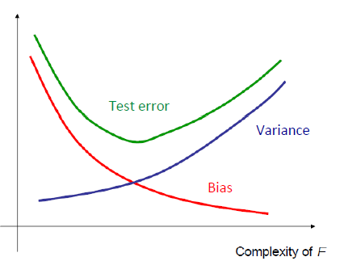
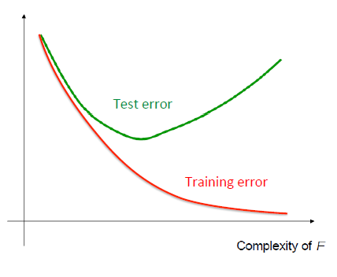

From classification to regression
Given \(X\in \mathcal{X}\), predict \(Y \in \mathcal{Y}\), Construct prediction rule \(f:\mathcal{X} \rightarrow \mathcal{Y}\)
Quantifies knowledge gained.
Measure of closeness between true label Y and prediction f(X)
0/1 lose:\(loss(Y,f(X))=1_{f(X)\neq Y}\). Risk: probability of error
square loss: \(loss(Y,f(X))=(f(X)-Y)^2\). Risk: mean square error
How well does the predictor perform on average? \[Risk~R(f)=\mathbb{E}[loss(Y,f(X))],~(X,Y)\sim P_{XY}\]
ideal goal: Construct prediction rule \(f^*:\mathcal{X}\rightarrow\mathcal{Y}\) \[f^*=\arg\min_f{E_{XY}[loss(Y,f(X))]}\] (Bayes optimal rule)
Best possible performance: \[\forall f,~R(f^*) \leq R(f)\] (Bayes Risk)
Problem: \(P_{XY}\) is unknown.
Solution: Training data provides a glimpse of \(P_{XY}\) \[\text{(observed)~}\{(X_i,Y_i)\} \sim_{i.i.d} P_{XY}\text{~unknown}\]
Model based approach: use data to learn a model for \(P_{XY}\)
Model-free approach: use data to learn mapping directly
Optimal predictor: \[f^*=\arg\min_f{\mathbb{E}[(f(X)-Y)^2]}\]
Empirical Minimizer: \[\hat{f}_n=\arg\min_{f\in\mathcal{F}}\frac{1}{n}\sum_{i=1}^{n}(f(X)-Y)^2\]
\(\mathcal{F}\) is the class of predictors:
Linear
Polynomial
Nonlinear
\[f(\vec{X})=\sum_{i=0}^{p}{\beta_0X^{i}}=\vec{X}^T\vec{\beta},~where~X^0=1,~\vec{\beta}=[\beta_0,\dots,\beta_p]^T\]
\[\hat{\vec{\beta}}=\arg\min_{\vec{\beta}}(A^T\vec{\beta}-\vec{Y})^T(A^T\vec{\beta}-\vec{Y}),~where~A=[\vec{X_1},\dots,\vec{X_n}]\]
\[J(\beta)=(A^T\vec{\beta}-\vec{Y})^T(A^T\vec{\beta}-\vec{Y})\]
\[\begin{array}{rcl} \frac{\partial J(\vec{\beta})}{\partial \vec{\beta}} & = & \frac{\partial (A^T\vec{\beta}-\vec{Y})^T(A^T\vec{\beta}-\vec{Y})}{\partial \vec{\beta}} \\ & = & \frac{\partial (\vec{\beta}^TAA^T\vec{\beta}-\vec{\beta}^TA\vec{Y}-\vec{Y}^TA^T\vec{\beta}+\vec{Y}^T\vec{Y})}{\vec{\beta}} \\ & = & (AA^T+(AA^T)^T)\vec{\beta}-A\vec{Y}-A\vec{Y} \\ & = & 2AA^T\vec{\beta}-2A\vec{Y} = 0 \\ & \Rightarrow & AA^T\vec{\beta}=A\vec{Y} \\ & \Rightarrow & \hat{\vec{\beta}}=(AA^T)^{-1}A\vec{Y},~\text{if $AA^T$ is invertible} \end{array}\]
Even when \(AA^T\) is invertible, might be computationally expensive if \(A\) is huge; however, \(J(\vec{\beta})\) is convex1 in \(\beta\).
Minimum of a convex function can be reached by gradient descent algorithm:
Initialize: pick \(\vec{w}\) at random
Gradient: \[\nabla_{\vec{w}} l(\vec{w})=[\frac{\partial l(\vec{w})}{\partial w_0},\dots,\frac{\partial l(\vec{w})}{\partial w_d}]^T\]
Update rule: \[\Delta \vec{w}=\eta \nabla_{\vec{w}}l(\vec{w})\], \[w_i^{t+1} \leftarrow w_i^t - \eta \frac{\partial l(\vec{w})}{\partial w_i}|_t\]
Stop: when some criterion met \(\frac{\partial l(\vec{w})}{\partial w_i}|_t < \epsilon\)
\(Rank(AA^T)\) = number of non-zero eigenvalues of \(AA^T\) = number of non-zero singular values of A \(\leq \min(n,p)\) since \(A\) is \(n\times p\)
\[A=U \Sigma V^T \Rightarrow AA^T=U\Sigma^2U^T \Rightarrow AA^T U = U\Sigma^2\]
Ridge Regression (L2 penalty)
\[\begin{array}{rcl} \hat{\vec{\beta}}_{MAP} & = & \arg\min_{\vec{\beta}}(A^T\vec{\beta}-\vec{Y})^T(A^T\vec{\beta}-\vec{Y}) +\lambda \vec{\beta}^T\vec{\beta}~~(\lambda \geq 0) \\ & = & (AA^T + \lambda I)^{-1} A\vec{Y} \end{array}\]
\((AA^T + \lambda I)\) is invertible if \(\lambda > 0\). Proof:
the symmetric matrix \(AA^T\) is positive-semidefinite matrix, because a matrix is positive-semidefinite iff it arises as the Gram matrix of some set of vectors2.
\(\therefore \forall \lambda>0~and~\vec{x}\neq\vec{0}\), \[\vec{x}^T(AA^T)\vec{x} = (A^T\vec{x})^T(A^T\vec{x}) \geq 0\] \[\vec{x}^T(AA^T+\lambda I)\vec{x} = \vec{x}^T (AA^T) \vec{x} + \lambda \vec{x}^T\vec{x} >0\]
\(\therefore\) \((AA^T+\lambda I)\) is positive definite.
\(\therefore\) the eigenvalues of \(B=(AA^T+\lambda I)\) are all positive. \[B\vec{v}=\lambda\vec{v} \Rightarrow \vec{v}^T B \vec{v} = \lambda >0\]
\(\therefore\) \((AA^T + \lambda I)\) is invertible if \(\lambda > 0\)
Why we need constraints: r equations, p unknowns - underdetermined system of linear equations.
\[\min_{\vec{\beta}} J(\beta)+\lambda pen(\vec{\lambda})\]
Ridge Regression: \(pen(\beta)=||\beta||_2^2\)
Lasso Regression: \(pen(\beta)=||\beta||_1\). No closed form solution, but can optimize using sub-gradient descent.
\(pen(\beta)=||\beta||_0=\sum 1_{\beta_i \neq 0}\)
Matlab code:
[B,FitInfo] = lasso(X,Y,Name,Value)X: Numeric matrix with n rows and p columns. Each row represents one observation, and each column represents one predictor (variable).
Y: Numeric vector of length n, where n is the number of rows of X. Y(i) is the response to row i of X.
’Alpha’: Scalar value from 0 to 1 (excluding 0) representing the weight of lasso (L1) versus ridge (L2) optimization. Alpha = 1 represents lasso regression, Alpha close to 0 approaches ridge regression, and other values represent elastic net optimization. See Definitions. Default: 1
\[Y=f^*(X)+\epsilon=X\beta^*+\epsilon\] \[\epsilon \sim \mathcal{N}(0,\sigma^2I)~~Y\sim\mathcal{N}(X\beta^*,\sigma^2I)\] \[\hat{\beta}_{MLE} = \arg\max_\beta (\log p(\{Y_i\}|\beta,\sigma^2,\{X_i\}))=\arg\min_{\beta}\sum_i(X_i\beta-Y_i)^2\]
Model parameters: \(\beta,\sigma^2\)
Conditional log likelihood: \(\log p(\{Y_i\}|\beta,\sigma^2,\{X_i\})\)
Least Square Estimator is same as Maximum Conditional Likelihood Estimator under a Gaussian model.
If \(AA^T\) is not invertible.
\[Y=f^*(X)+\epsilon=X\beta^*+\epsilon\] \[\epsilon \sim \mathcal{N}(0,\sigma^2I)~~Y\sim\mathcal{N}(X\beta^*,\sigma^2I)\] (1) Gaussian prior: \[\beta \sim \mathcal{N}(0,\tau^2 I)~~p(\beta) \propto \exp(-\beta^T\beta/2\tau^2)\] \[\hat{\beta}_{MAP} = \arg\max_\beta \log p(\{Y_i\}|\beta,\sigma^2,\{X_i\}) +\log p(\beta)=\arg\min_{\beta}\sum_i(X_i\beta-Y_i)^2+\lambda(\sigma^2,\tau^2)||\beta||_2^2\] (2) Laplace prior: \[\beta \sim Laplace(0,t)~~p(\beta_i) \propto \exp(-|\beta_i|/t)\] \[\hat{\beta}_{MAP} = \arg\max_\beta \log p(\{Y_i\}|\beta,\sigma^2,\{X_i\}) +\log p(\beta)=\arg\min_{\beta}\sum_i(X_i\beta-Y_i)^2+\lambda(\sigma^2,\tau^2)||\beta||_1\]
Model parameters: \(\beta,\sigma^2\)
Conditional log likelihood: \(\log p(\{Y_i\}|\beta,\sigma^2,\{X_i\})\)
Log prior: \(\log p(\beta)\)
Univariate: \(f(X)=\sum{\beta_iX^i}=[1, X, X^2, \dots, X^m]^T\beta\) \[\hat{\beta}=(AA^T)^{-1}AY~or~(AA^T+\lambda I)^{-1}AY\]
Multivariate: \(f(X) = \sum_i{\beta_i X^{(i)}} + \sum_{i,j}{\beta_{i,j} X^{(i)} X^{(j)}}+\sum_{i,j,k}{\beta_{i,j,k} X^{(i)} X^{(j)}X^{(k)}}+\dots\)
Large bias, small variance: poor approximation but robust/stable
Small bias, large variance: good approximation but unstable
Bias-Variance Decomposition: \[E[(f(X)-f^*(X))^2] = Bias^2 + Variance\]
\(Bias = E[f(X)] - f^*(X)\): How far is the model from best model.
\(Variance = E[(f(X)-E[f(X)])^2]\): How variable is the model.
 
\[f(X)=\sum_i \beta_i \phi_i(X)\]